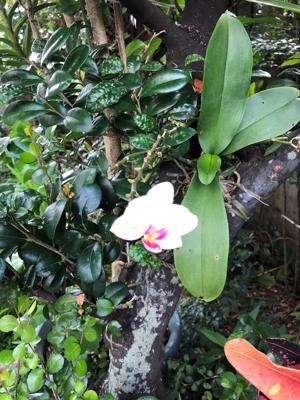
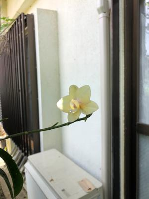

うるがいの話 ある日
最新: 最後の一花
うるがいとは 前提知識です
カニの画像をクリックすると『うるがいの話』サイトを表示します
うるがい(ｳﾙｶﾞｲ urugai)とは、『もずくがに』の名前でとても大きくなります。
たながー（ﾀﾅｶﾞｰtanagaa）とは手長えびのことで、何種類かあり大きいのは車 エビぐらいになります。
ぶながー(bunagaa)とは、赤い髪の毛、赤い身体、そして身長は１ｍ２０ｃｍ ぐらい、川の蟹を食べているの目撃された。場所は沖縄県国頭郡大宜味村のと ある村僕の隣近所に住んでいる爺さんから、聞いた話です。
2021年07月16日 (金）
最後の一花
16:19


２カ月以上も花が咲いた欄の花がとうとう、無くなってしまった。写真は最後
の一輪の記念撮影である。花を見ていると和む、何故、欄が選ばれるのか、ん
、なんとなく分かる気がする。今日、緊急事態宣言前の５月１７日から約２カ
月空けて、久々に県立図書館へいく。鳥羽亮の作品６冊とギターの本３冊、と
奥本大三郎訳の「ヴィクトリア朝の昆虫学」とで借りられる制限の１０冊を借
りる。返却期限はなんと！、お盆が明けた８月３０日である。